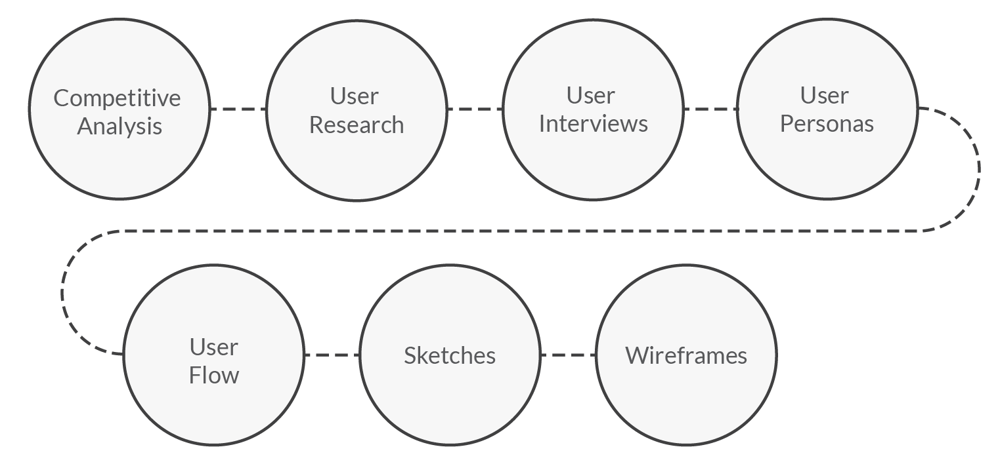

Nata | Recipe app UX Case Study
Are you hungry?
UI | UX Design Process
Nata is your smart cooking sidekick, that offers the user an endless number of simple recipes that adat to your day to day life with personalized guidance every step of the way.
Let's improve together life kitchen and make it fun!
Overview
Cooking and nutrition has been more and more a debated thematic nowadays. The problem is to try to include it in the different routine that everyone has.
Nata is an app that adapts the user needs at the moment by filtering different cathegories, it can be that you just want to cook something fast from lack of time, based by the money that you have available or some specific ingredient/type of diet that you want to discover.
Design Process
Competitive Analysis
A competitive analysis of the main competitors in the market was conducted. Looking for the most used cooking apps, I chose “Kitchen Stories” and “Yummly” to conduct the analysis. It was quite long so I will present just the main parts of “Kitchen Stories”.
Kitchen Stories
Key Objectives
It is an app that is free and open to everyone. Their core message is that “everyone can cook”, being that their slogan. Every type of recipe can be found in this app, from vegetarian to low carb, options for every lifestyle. What sets them from the competitors apart is that they inspire you to upload your own recipes, make your own community and share your experiences showing that everyone can do it.
- This app encourages every type of people to start cooking
- Incentives you to upload and share your experience in the kitchen with an international crowd
- Access to a very big amount of free recipes, tips, videos and articles daily
- Brings together an huge community worldwide through the exchange of information
Swot Analysis
Strenghts
- Attractive, simple and award winning UI design
- Provides food articles and inspiration stories
- Gives the option to create, upload and comment recipes
- Gives you the option to make your own cooking books under your profile
Weaknesses
- Lack of marketing for the app in general
- Not having the filters right away to choose what exactly you are looking for
- Not having in the filters the difficulty level or the costs of the meal, it is also a factor that is important
Opportunities
- Put the filters in the first page making the search easier and more intuitive
- Include the di culty level available as a filter so that you can choose what you want to do and how dificult it should be
- Include the price range for the meal as a filter to give the opportunity to fit everyone needs, ex: a student hasn’t the same money budget as an employed person
Threats
- A lot of similar apps and websites with similar content and have the same target
- More focused to the user
User Research
Who
Everyone that are in love with cooking, take it more as a hobby, or that want to try and discover new things, new ways to make food, explore that vast world, share their experiences.
What
Users will be able to search, view and archive recipes. It will adapt to the users preference and make the search for what they look for simple, quick and easy. It will also allow them to save and view the chosen recipes as their own cook book.
When
This app will be user when browsing recipes, when thinking about try something new or just want to make something simple and quick but different that they are used to, or impress at the dinner that they will host, users will likely be using this app.
User interviews
The first step to create this app was to conduct research to figure out the key features that my app would need to fullfil the best way the goals proposed. For that I recruited potential users to interview and created a set of non-leading questions to undertand theys piont of view and wishes in order to create the user personas.
Cooking is a way of life, what you eat defines what you are.
Findings from the interviews
- The description of the recipe as simple as possible preferably with bullet points, unecessary information is unappealing
- The love for cooking but the lack of time to do it is a problem
- Be able to select the ingredients that you have available at the moment so that trips to the supermarket can be avoided
- Appealing images are important
- Rattings from other users are important
- Save the recipes into cathegories is a nice tool to have
User Personas
So, now that I have gathered all of the possible informations for the project, and begun to prioritize features based on how crucial they are to the users and business, the next key step was to consolidate this information in a MVP document.
Bellow you can see some examples of the user stories and requirements that were used to develop the MVP objectives
User Stories and requirements
User Story
- As a busy person, I want to find simple, quick and delicious recipes, so that I can spend less time in the kitchen.
- As a organized person, I want recipes with step by step instructions so that I can easily cook the meals without losing time with other things.
- As a organized person, I want to save the recipes at any time so that I can plan my meals for the week.
Requirement
- Search tool with ilter functions appropriated with time and difficulty level
- Inside the recipe description have step by step concise instructions
- Creation of an personal account. Save the recipes and therefore create your own “cookbook” (store the recipes chosen). Filter with a serving count
Need | Want
- Need - creation of different filters to allow the user to find exactly what we is looking for
- Need - creation of very simple and concise content inside the recipes
- Need - allow to the users to have their personal space and be able to save there their favourite recipes
User Flow Diagram
With the information previouly gathered, I am finally able to create a user flow to illustrate the app’s navigation structure to visualize and define the key screens that are needed to start designing them
Sketches
Exploratory sketches were created with old school pen and paper to generate and explore ideas quickly of how the screens and the app flow could look like.


Wireframes
It was time to start designing the first mid fidelity wireframes fot the app

Preference Test
For a better understanding of the users preferences, I conducted an AB testing to decide between two options. In the case bellow it was about the time filter inside the filter menu to see theis feedback and use the design accordingly.
28%
It can be difficult to place the node on the slider bar where it is supposed
72%
The slider bar is more appealing,innovative, gives more options as a time range and it is easier to use